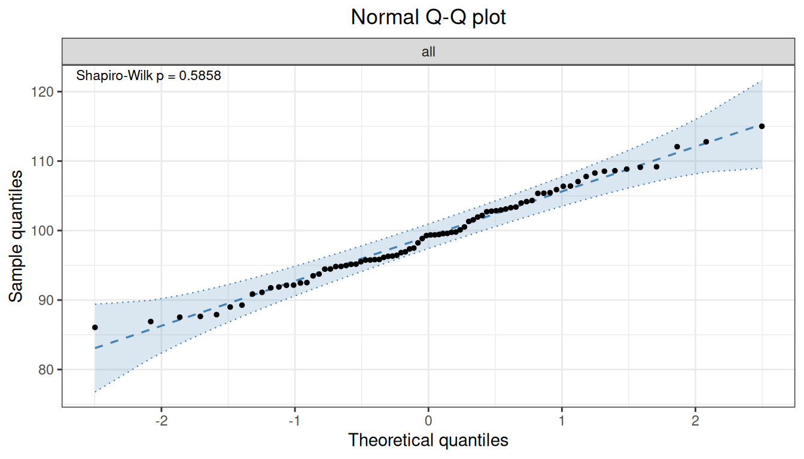
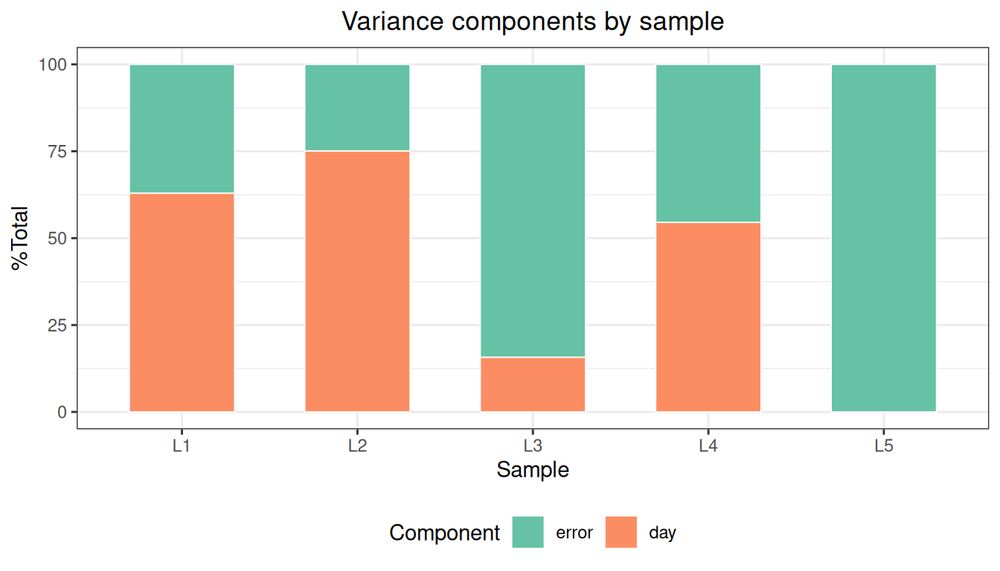

代码
library(ivdtools)
library(readr)精密度（precision）评价同一测量系统在可重复条件下对同一样品测得结果之间的一致程度， 通常用标准差（SD）或变异系数（CV%）表示。CLSI EP05 将精密度按条件细分为批内（within-run）、 批间（between-run）和日间（between-day）等方差分量，并给出各分量的估计、置信区间以及用于判定 的可接受限。
本文演示如何使用 ivdtools 包的 precision() 建立精密度方差分量分析，完成异常值检查、正态性 评估、方差分量与置信区间估计、Sadler 精密度剖面拟合，并把结果重排为 EP05 风格的方差分量表。 示例数据为确定性的教学数据，仅用于演示分析流程；正式研究必须使用方案或标准预先规定的实验设计、 接受标准与分析参数。
library(ivdtools)
library(readr)数据格式要求：
precision()最终调用VCA::anovaVCA()，要求普通data.frame。用readr::read_csv()读入的是 tibble，因此本文统一先转为data.frame，再把实验因子列（天、批、复孔等）转为因子。
| 函数 | 主要用途 | 关键输入或输出 |
|---|---|---|
precision() |
创建精密度方差分量分析对象 | 嵌套公式、by 分组、平衡性检查 |
outlier() |
逐样本异常值检测 | Grubbs 或 IQR 方法 |
normal() |
逐样本正态性检验 | Shapiro-Wilk 等，level 控制置信水平 |
variance() / vc() |
估计方差分量 | VC、%Total、SD、CV%，NegVC 在此传入 |
ci() |
各分量 SD/CV 的置信区间 | Satterthwaite 近似 |
profile() |
Sadler 精密度剖面拟合 | 10 个候选模型、AIC 选优 |
list_sadler() |
查看 10 个 Sadler 模型 | 模型公式与类型 |
summary() / plot() |
汇总与绘图 | plot(type=...) 选择图形 |
precision() 创建对象后，分析结果通过 outlier()、normal()、variance()、ci()、profile() 逐步累积到对象中，必须重新赋值：
precision() -> outlier() -> normal() -> variance() -> ci() -> profile()只有已执行的分析才出现在 summary() 中，且 plot() 的某些图形依赖前置分析。
20×2×2 指 20 天、每天 2 批、每批 2 个重复，共 80 个结果，是 EP05 的经典设计之一：
ep05 <- read_csv("./data/precision-ep05.csv", show_col_types = FALSE)
ep05 <- as.data.frame(ep05)
str(ep05)'data.frame': 80 obs. of 4 variables:
$ day : num 1 1 1 1 2 2 2 2 3 3 ...
$ run : num 1 1 2 2 1 1 2 2 1 1 ...
$ rep : num 1 2 1 2 1 2 1 2 1 2 ...
$ value: num 96.9 93.5 99.3 101.5 103 ...实验因子列在 CSV 中为整数，读取后转换为因子：
ep05$day <- factor(ep05$day)
ep05$run <- factor(ep05$run)
ep05$rep <- factor(ep05$rep)dim(ep05)[1] 80 4summary(ep05$value) Min. 1st Qu. Median Mean 3rd Qu. Max.
86.06 94.83 99.33 99.11 103.53 115.01 value ~ day/run 表示方差分量按 日间（day）→ 日内的批（run）逐层嵌套。 / 是嵌套记法，等价于把每个深一层因子视为上一层因子的分组内因子。
p <- precision(ep05, value ~ day/run)
pPrecision analysis object
Data class : data.frame
Total rows : 80
Formula : value ~ day/run
Samples : 1
Factor levels
day : 1 (4), 2 (4), 3 (4), 4 (4), 5 (4), 6 (4), 7 (4), 8 (4), 9 (4), 10 (4), 11 (4), 12 (4), 13 (4), 14 (4), 15 (4), 16 (4), 17 (4), 18 (4), 19 (4), 20 (4)
run : 1 (40), 2 (40)
rep : 1 (40), 2 (40)
Analysis status
[ ] outlier
[ ] normal
[ ] variance
[ ] ci
[ ] profile平衡性检查输出提示最大/最小单元大小之比；当数据高度不平衡时，VCA 会提示改用 REML。
逐样本做异常值检测和正态性检验：
p <- outlier(p, method = "grubbs")Outlier detection -- Grubbs (alpha = 0.05)
No outliers detected.p <- normal(p, method = "shapiro")Normality test -- Shapiro-Wilk
Sample n W p-value
---------------------------------------------
all 80 0.9868 0.5858参数说明：
outlier()的method可选"grubbs"（默认）或"iqr"，alpha为 Grubbs 显著性水平。normal()的method="auto"会根据样本量选择检验（n≤50 用 Shapiro-Wilk、更大用 Anderson-Darling 等）；指定method="shapiro"时输出的W列才是真正的 Shapiro-Wilk W 统计量。 单样本数据 n=80，两种方式均可接受，本示例显式指定以便展示。
p <- variance(p)Variance components
sample component VC %Total SD CV[%]
----------------------------------------------
all day 18.8358 42.6 4.3400 4.3788
all day:run 17.4343 39.4 4.1754 4.2128
all error 7.9482 18.0 2.8193 2.8445 NegVC 参数需要在 variance() 处传入：
p <- variance(p, NegVC = TRUE) # 允许负方差分量（默认 FALSE）p <- ci(p)Confidence intervals (SD)
sample component estimate lower upper
----------------------------------------
all total 6.6497 5.4288 8.5842
all day 4.3400 0.0000 6.2255
all day:run 4.1754 2.0129 5.5513
all error 2.8193 2.3147 3.6073
Confidence intervals (%CV)
sample component estimate lower upper
----------------------------------------
all total 6.7091 5.4773 8.6609
all day 4.3788 0.0000 6.2812
all day:run 4.2128 2.0309 5.6009
all error 2.8445 2.3353 3.6395 ci() 采用 Satterthwaite 有效自由度近似计算各分量 SD 与 CV 的置信区间。
按分量名的嵌套深度把方差分量归入批内、批间、日间，并计算总 SD/CV，进一步把各分量置信区间合并形成带区间的完整 EP05 报告表。统计结果是否可接受必须依据方案预先规定的精密度限值判定。
散点图可用于快速识别测试异常和测值分布情况：
plot(p, type = "dot")
plot(p, type = "qq")
图形依赖：
plot(type="dot")为按运行顺序的散点（无需前置分析），type="his"为标准直方图；type="var"需要先执行variance()，type="qq"需要先执行normal()，type="profile"需要先执行profile()。绘图前请确认对应分析已运行。
summary(p)
Precision analysis -- summary
----------------------------------------
Precision analysis object
Data class : data.frame
Total rows : 80
Formula : value ~ day/run
Samples : 1
Factor levels
day : 1 (4), 2 (4), 3 (4), 4 (4), 5 (4), 6 (4), 7 (4), 8 (4), 9 (4), 10 (4), 11 (4), 12 (4), 13 (4), 14 (4), 15 (4), 16 (4), 17 (4), 18 (4), 19 (4), 20 (4)
run : 1 (40), 2 (40)
rep : 1 (40), 2 (40)
Analysis status
[x] outlier
[x] normal
[x] variance
[x] ci
[ ] profile
Outlier detection -- Grubbs (alpha = 0.05)
No outliers detected.
Normality test -- Shapiro-Wilk
Sample n W p-value
---------------------------------------------
all 80 0.9868 0.5858
Variance components
sample component VC %Total SD CV[%]
----------------------------------------------
all day 18.8358 42.6 4.3400 4.3788
all day:run 17.4343 39.4 4.1754 4.2128
all error 7.9482 18.0 2.8193 2.8445
Confidence intervals (SD)
sample component estimate lower upper
----------------------------------------
all total 6.6497 5.4288 8.5842
all day 4.3400 0.0000 6.2255
all day:run 4.1754 2.0129 5.5513
all error 2.8193 2.3147 3.6073
Confidence intervals (%CV)
sample component estimate lower upper
----------------------------------------
all total 6.7091 5.4773 8.6609
all day 4.3788 0.0000 6.2812
all day:run 4.2128 2.0309 5.6009
all error 2.8445 2.3353 3.6395 当需要评价多个浓度水平时，用 by 指定样本分组列，各样本分别估计方差分量：
profile_data <- as.data.frame(read_csv(
"./data/precision-profile.csv",
show_col_types = FALSE
))
profile_data$sample <- factor(profile_data$sample)
profile_data$day <- factor(profile_data$day)
profile_data$rep <- factor(profile_data$rep)p2 <- precision(profile_data, value ~ day, by = "sample")
p2 <- variance(p2)Variance components
sample component VC %Total SD CV[%]
------------------------------------------------
L1 day 0.6376 63.0 0.7985 3.9446
L1 error 0.3750 37.0 0.6124 3.0250
L2 day 5.7139 75.1 2.3904 4.7584
L2 error 1.8937 24.9 1.3761 2.7393
L3 day 3.3913 15.7 1.8415 1.8088
L3 error 18.1466 84.3 4.2599 4.1840
L4 day 30.5549 54.6 5.5276 2.7529
L4 error 25.4525 45.4 5.0451 2.5126
L5 day 0.0000 0.0 0.0000 0.0000
L5 error 171.7986 100.0 13.1072 3.3003 p2 <- ci(p2)Confidence intervals (SD)
sample component estimate lower upper
-----------------------------------------
L1 total 1.0063 0.6007 2.9368
L1 day 0.7985 0.0000 1.4267
L1 error 0.6124 0.4391 1.0108
L2 total 2.7582 1.5714 9.9889
L2 day 2.3904 0.0000 4.2023
L2 error 1.3761 0.9868 2.2716
L3 total 4.6409 3.2872 7.8819
L3 day 1.8415 0.0000 4.1779
L3 error 4.2599 3.0547 7.0319
L4 total 7.4838 4.6166 19.1652
L4 day 5.5276 0.0000 10.0268
L4 error 5.0451 3.6177 8.3280
L5 total 13.1072 9.5629 20.8255
L5 day 0.0000 NA NA
L5 error 13.1072 9.3990 21.6365
Confidence intervals (%CV)
sample component estimate lower upper
-----------------------------------------
L1 total 4.9710 2.9673 14.5079
L1 day 3.9446 0.0000 7.0480
L1 error 3.0250 2.1692 4.9936
L2 total 5.4905 3.1281 19.8843
L2 day 4.7584 0.0000 8.3652
L2 error 2.7393 1.9643 4.5219
L3 total 4.5583 3.2287 7.7416
L3 day 1.8088 0.0000 4.1035
L3 error 4.1840 3.0003 6.9067
L4 total 3.7271 2.2992 9.5447
L4 day 2.7529 0.0000 4.9936
L4 error 2.5126 1.8017 4.1476
L5 total 3.3003 2.4078 5.2436
L5 day 0.0000 NA NA
L5 error 3.3003 2.3666 5.4478 比较样本的变异比例，可用于产品优化和检验方案设计：
plot(p2, type = "var")
profile() 对每个方差分量拟合 Sadler 模型族，按 AIC 选出最优模型：
list_sadler()Sadler Precision Profile Models
1 Constant SD sigma^2 = b1
2 Constant CV sigma^2 = b1 * mu^2
3 Linear (variance) sigma^2 = b1 + b2 * mu
4 Power (fixed K) sigma^2 = b1 * mu^K
5 Power (fixed K, +intercept) sigma^2 = b1 + b2 * mu^K
6 Linear (SD) sigma = b1 + b2 * mu
7 Power (SD) sigma = b1 + b2 * mu^b3
8 Power (variance) sigma^2 = b1 + b2 * mu^b3
9 Exponential (log-log) log(sigma^2) = b1 + b2 * log(mu)
10 Power (full) sigma^2 = b1 * mu^b2p2 <- profile(p2, model.no = 1:10)Precision profiles -- Sadler
total: sigma = 0.0000 + 0.0086 * mu^1.6702 (AIC = 56.45, R^2 = 0.9847)
day: sigma = 0.0000 + 0.0095 * mu^1.4951 (AIC = 43.46, R^2 = 0.8919)
error: sigma^2 = 0.0010 * mu^2 (AIC = 55.96, R^2 = 0.9806)plot(p2, type = "profile")
参数说明：
profile(model.no = 1:10)指定候选模型序号；...可传给内部 Sadler 拟合（例如K）。 每个方差分量至少需要 3 个样本具有有限 SD 才能拟合，因此多样本设计至少应设 3 个浓度水平。 剖面可用于功能灵敏度等分析中预测任意浓度下的 SD/CV（参见《功能灵敏度》）。
本示例 total 与 day 分量最优模型为幂函数型（模型 7），day:rep 分量为恒定 CV 型（模型 2）， 符合”SD 随浓度升高而增大、CV 相对稳定”的常见设定。
数据包含 2 个站点（site）、3 个样本（sample），每站点每样本 3 天 × 3 批 × 5 复孔：
sites_data <- as.data.frame(read_csv(
"./data/precision-sites.csv",
show_col_types = FALSE
))
sites_data[] <- lapply(sites_data, function(x)
if (is.numeric(x) && all(x == round(x))) factor(x) else x)
str(sites_data)'data.frame': 270 obs. of 6 variables:
$ site : chr "A" "A" "A" "A" ...
$ sample: chr "S1" "S1" "S1" "S1" ...
$ day : Factor w/ 3 levels "1","2","3": 1 1 1 1 1 1 1 1 1 1 ...
$ run : Factor w/ 3 levels "1","2","3": 1 1 1 1 1 2 2 2 2 2 ...
$ rep : Factor w/ 5 levels "1","2","3","4",..: 1 2 3 4 5 1 2 3 4 5 ...
$ value : num 49.2 52.3 48.8 49.4 51.5 ...by 可接受多个列名，内部按交互作用分组，一次得到所有站点 × 样本组合：
p3 <- precision(sites_data, value ~ day/run, by = c("sample", "site"))
p3 <- variance(p3)Variance components
sample component VC %Total SD CV[%]
----------------------------------------------
S1.A day 0.0000 0.0 0.0000 0.0000
S1.A day:run 0.1646 6.8 0.4057 0.8231
S1.A error 2.2677 93.2 1.5059 3.0553
S2.A day 0.3241 4.3 0.5693 0.5602
S2.A day:run 0.1523 2.0 0.3903 0.3840
S2.A error 7.0483 93.7 2.6549 2.6124
S3.A day 4.4871 15.6 2.1183 1.0420
S3.A day:run 1.7006 5.9 1.3041 0.6415
S3.A error 22.5797 78.5 4.7518 2.3375
S1.B day 0.0000 0.0 0.0000 0.0000
S1.B day:run 0.5459 23.5 0.7389 1.4758
S1.B error 1.7784 76.5 1.3335 2.6637
S2.B day 0.0000 0.0 0.0000 0.0000
S2.B day:run 1.6690 21.5 1.2919 1.2891
S2.B error 6.0856 78.5 2.4669 2.4616
S3.B day 0.7633 2.3 0.8737 0.4448
S3.B day:run 0.0000 0.0 0.0000 0.0000
S3.B error 31.8033 97.7 5.6394 2.8709 names(p3$results)[1] "S1.A" "S2.A" "S3.A" "S1.B" "S2.B" "S3.B"等价的做法是先按站点 split()，再对每个站点子集执行相同的分析参数。当站点间的方差分量 结构预计不同，或需要分别出具报告时，拆分后单独分析更清晰：
for (s in c("A", "B")) {
sub <- sites_data[sites_data$site == s, ]
ps <- precision(sub, value ~ day/run, by = "sample")
ps <- variance(ps)
ps <- ci(ps)
}注意： 多中心研究应统一分析方案、方差分量模型与报告口径；“先按中心出报告、再合并汇总” 时，务必记录每个中心的原始数据是否纳入、排除标准与因子定义是否一致。
除标准的天/批/重复嵌套外，precision() 的公式可以是任意 VCA 嵌套结构，例如再加入操作者 （operator）层：value ~ operator/day/run，即 操作者 → 天 → 批 逐层嵌套：
custom_data <- as.data.frame(read_csv(
"./data/precision-custom.csv",
show_col_types = FALSE
))
custom_data[] <- lapply(custom_data, function(x)
if (is.numeric(x) && all(x == round(x))) factor(x) else x)p4 <- precision(custom_data, value ~ operator/day/run)
p4 <- variance(p4)Variance components
sample component VC %Total SD CV[%]
----------------------------------------------------
all operator 2.2914 11.8 1.5137 1.4898
all operator:day 6.3159 32.4 2.5132 2.4734
all operator:day:run 3.2463 16.7 1.8017 1.7733
all error 7.6322 39.2 2.7627 2.7190 precision() 的公式要如实反映实验分层。read_csv 读取后转 data.frame，因子列显式转 factor，避免 VCA 报错或歧义。outlier → normal → variance → ci → profile，每次分析重新赋值；绘图依赖前置分析。$results 的数值量（sd_comp/cv_comp/vc）重排为 EP05 术语表，不要直接使用 展示用字符串 $vc。